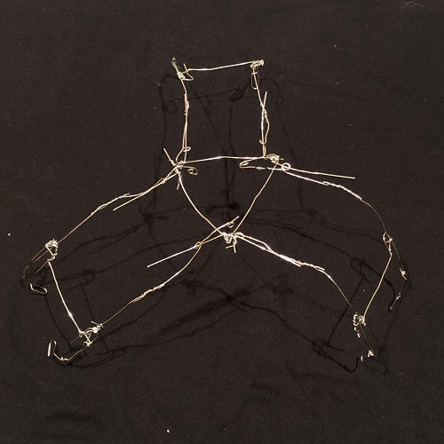

A mechanical claw built for my UBC APSC 101 class.
This was a team project and consisting of using an Arduino starter-kit and common household materials. Why I specifically chose to include this team project in my portfolio is because I personally designed and built this claw for the team. I was very proud of the final product and its performance in the class competition. The program was written both by me and another student.
The claw was built using electonic devices included in the Arduino Starter-Kit, and the body was build with common household items: popsicle sticks, tape, wooden chopsticks, etc.
The claw activates by the distance from which a sonar sensor is from the ground. The claw open/closes by a servo, which pulls vertically on three arms that move laterally. The three arms are connected to the servo via a fishing line.
The idea came from the desire to build a three-armed claw. Without the ability to use sheetmetal, I first attempted to use paperclips to build the claw; however, it dawned upon me that it was extremely difficult and finger-wrenching to bend over 100 paperclips.
Later, I resulted to using popsicle sticks and carboard as the materials were much easier to manipulate.


I was very proud of this project since the product was very successful and it looks awesome.
I designed entirely, and built the claw mainly by myself; however, I give credit to my team for creating the engineering drawings, poster, program, and their physical help during class time.
Above is a picture of my room when building the claw dated: Feb 5, 2022 | 2:23am. While I usually sleep at or before midnight, I had a lot of fun building and testing this claw - so much that I willingly stayed up late even though it was not due the next day.
The image on the right is a view of how I took the videos of my claw, presented in the gifs above. My phone would lean against my wallet, above the tissues to get a still shot.